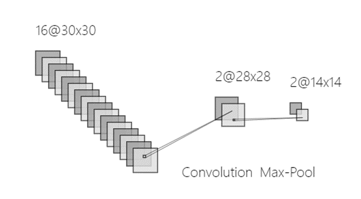
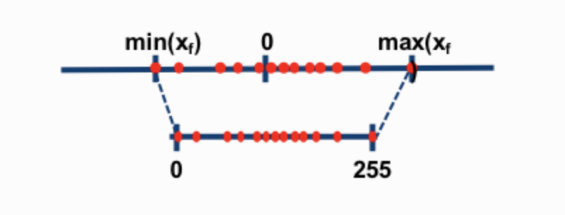

Overview
Convolution Neural Network(CNN) is widely used in image processing applications like classification and object recognition. Many of these applications employed a CNN as their backbone where multiple convolution layers were stacked together. Sometimes even a single convolution layer can be used to extract some specific information about the image like color, texture, edge, etc. Strong parallel computing capability and relatively low power consumption make FPGA a popular platform for deploying CNN. So, instead of implementing a complete CNN model on the FPGA toward some specific applications, our project focuses on implementing a highly parallelized microarchitecture that is specifically designed for the inference of the convolution layers with some relevant parameters of a CNN layer can be configured. On the DE1-Soc board, FPGA is responsible for CNN inference and HPS takes care of controlling and scheduling the inference procedure on FPGA and feeding input feature maps and weights to FPGA.
Background Math
As shown in Figure 1, a typical CNN layer is mainly composed of convolution operation, activation function, and pooling operation.

The convolution operation is the most important step in the CNN layer shown in Figure 2. The
size of output feature maps O*O is relevant to many parameters of one single convolution layer,
including the number of input channels N, the number of output channels M, the size of the input
feature map L*L, the size of the convolution kernel K*K, the number of padding P and convolution
stride S. Using the above representation, the convolution layer follows the below equation:
公式
In many cases, the size of the convolution kernel is 3*3, the stride of convolution is 1, and P will be set to 1 in order to keep the size of the output feature map unchanged.

There are mainly two kinds of pooling methods for pooling operation: max pooling and average pooling. Max pooling is relatively more widely used than average pooling to reduce the spatial dimensions of feature maps and make the network more invariant to small translations in the input data. In max pooling, a sliding window (or pooling window) moves over the input feature map, and for each position of the window, the maximum value within the window is taken as the output. As shown in Figure 3, the pooling operation can actually be considered as a special case of convolution operation with a stride of 2 and no padding, so the output feature map will decrease by half.

An activation function in a neural network is a non-linear function applied to the output of each neuron. The primary purpose of the activation function is to introduce non-linearity into the model, allowing the network to learn and model complex patterns in the data. The Rectified Linear Unit (ReLU) is one of the most commonly used activation functions in neural networks, especially in CNN and it’s also very popular in deploying CNN on embedded systems owing to its simplicity. The ReLU function is defined as:
公式
When implementing a CNN layer on the FPGA, some extra steps need to be introduced, like the quantization module where we converted the data representation from 32-bit floating point to the 8-bit integer and adjusted the pixel of feature maps to keep relatively high precision with low resource utilization. Specifically, we implemented the post-training static quantization(PTSQ). As Figure 4 exhibits, by scaling and shifting, PTSQ allows us to map the original data range to (0, 255), making it more feasible to deploy CNN on FPGA because of lower resources to represent data.
(source: https://www.mlsys.ai/papers/gptq.html)